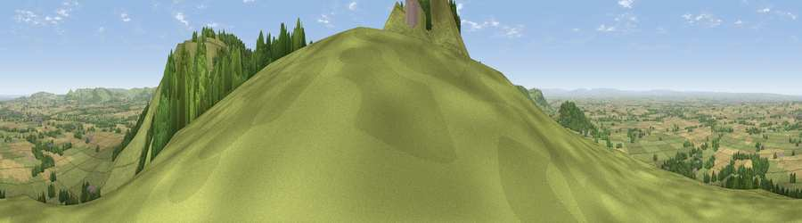

Viewpoint near Carlton in Cleveland
#924 in England · top 4% of its area beats it · near Carlton in Cleveland · open accessWhere it is
The exact computed spot (NZ 52062 03262). Click the marker for map links.
Public access: this spot lies on mapped open-access land (CRoW Act 2000) — you may roam here on foot. Computed from Natural England's CRoW access layer and OpenStreetMap rights of way — not the legal definitive map. Always verify locally.
The view, rendered

A 360° render of this exact spot computed from the terrain model, tree cover and land cover — summer colours, afternoon light, calibrated against photographs of famous viewpoints. Real trees, hedges and buildings will differ in detail.
The panorama
Grey silhouette: terrain skyline in each direction (720 bearings, Earth curvature and refraction included). Dashed green: skyline with trees (+15 m) and buildings (+8 m) as obstacles. Blue strip: how far the ground is visible on each bearing.
Where the view opens
Wedge length = distance to the farthest visible ground on that bearing (vegetation-aware). Rings at 10, 25 and 50 km.
What fills the view
52% grassland · 34% woodland · 12% cropland · 1% built-up
Angular shares of the visible panorama (visual magnitude), not map area. Landscape diversity 0.45 (0–1 Shannon).
Key numbers
More beautiful places nearby
The staircase of upgrades: each row has a higher view potential than everything closer. Driving times are estimates from straight-line distance, calibrated against real road routing — check an actual route before setting out.
| Place | Direction | Drive | Score |
|---|---|---|---|
| Carlton Bank | SSW · 1 km | ~2 min | 85.1 |
| Roseberry Topping | NNE · 11 km | ~21 min | 85.8 |
| Viewpoint near Lazenby | NNE · 16 km | ~28 min | 86.4 |
| Warsett Hill | NE · 25 km | ~41 min | 86.8 |
| Viewpoint near Easington | NE · 28 km | ~44 min | 90.2 |
| The Knoll | SSW · 427 km | ~403 min | 91.0 |
54.42214, -1.19914 · source: screening · position refined by local search. Computed location — check access rights before visiting.